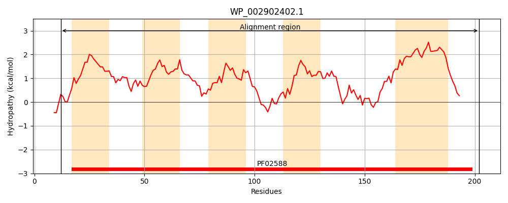
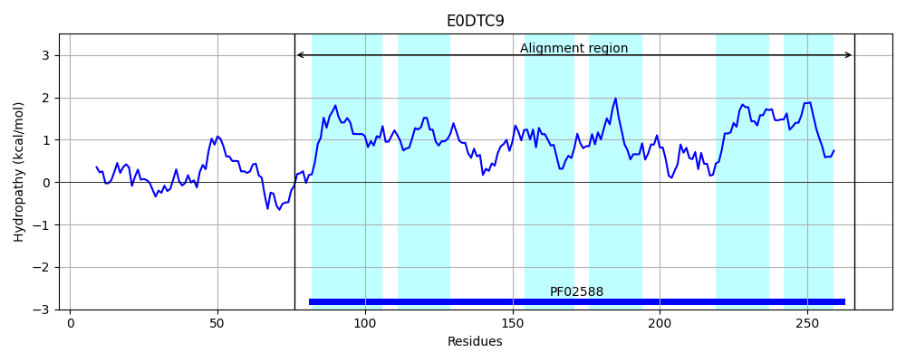
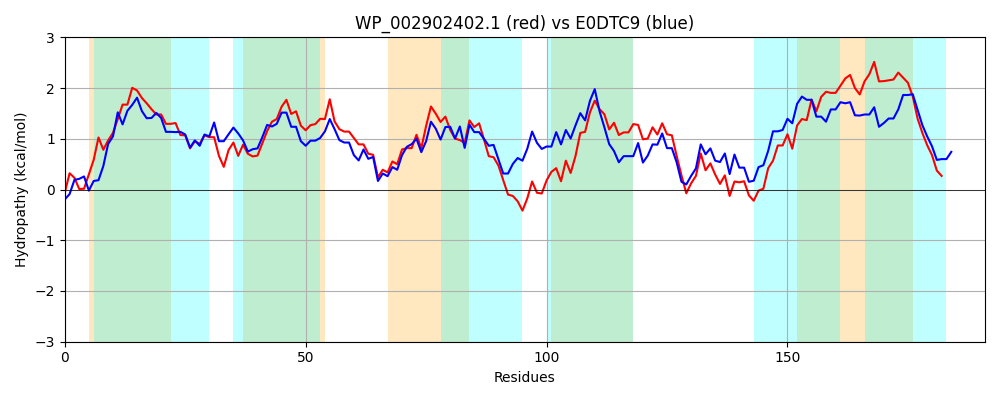

Hit Accession: E0DTC9
Hit TCID: 2.A.115.1.4
Hit Description: gnl|BL_ORD_ID|3548 gnl|TC-DB|E0DTC9|2.A.115.1.4 Putative uncharacterized protein OS=Brucella sp. NF 2653 GN=BROD_0295 PE=4 SV=1
Mach Len: 191
e:0.000000
Query TMS Count : 5
Hit TMS Count: 6
TMS-Overlap Score: 4.000000
Predicted Substrates:None
BLAST Alignment:
Score: 507 , Bit scores: 199 bits, E-value: 1.7e-64, Alignment length: 191, Percentage identity: 51
Query: 12 HTWLEDTLALLFGTLMISFGIILFRQAGALTGGTAGMAFLIHYATHLPFGVVFFVINLPFYWLSVRRMGAAFTLKTFCAVGLVSLFSDLHGYFIHVDRLNPYYATLFGNIMVGIGFVVLFRHKASLGGVNILALYLQDKSGIRAGKFQMVVDACIVTASLWVVSLPMLLVSILGAVILNSIIAMNHRPGRY 202
H ED +A+L GT I+ GI L+ A +TG TAG+A LIHYAT FG+++F+INLPFY+ +VRRMG AFT++TF AV L+S F+ L + +NP +A L G ++G+G + LFRH++ +GGVNILALYLQD GIRAG FQ+ +D I+ ASL+ + +++S++GAV +N IIA+NH+PGRY
Sbjct: 76 HRLYEDAIAMLIGTSFIALGITLYSHAMLMTGSTAGIALLIHYATGTGFGLLYFLINLPFYYFAVRRMGWAFTIRTFAAVALLSGFTRLMPLNVDFTSINPLFAALMGGTLMGMGVLALFRHRSGVGGVNILALYLQDAYGIRAGWFQLGLDVLIMLASLFFIPWENMVLSLVGAVAMNVIIAINHKPGRY 266 | Protein Hydropathy Plots: |
|---|
|  |  |
Pairwise Alignment-Hydropathy Plot:
|
|---|
|  |